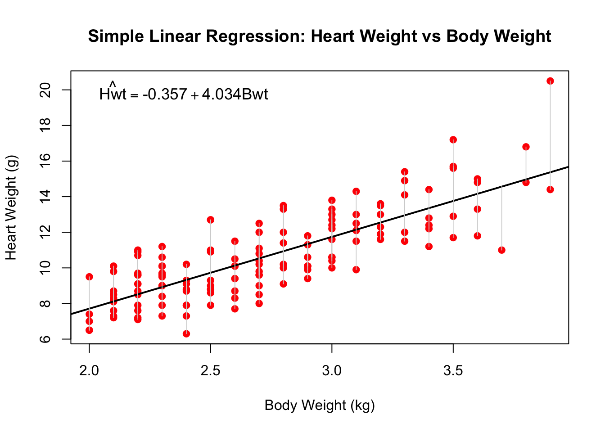

library(MASS)
model1 <- lm(Hwt ~ Bwt, data = cats)
model1
Call:
lm(formula = Hwt ~ Bwt, data = cats)
Coefficients:
(Intercept) Bwt
-0.3567 4.0341 Recall the example:
library(MASS)
model1 <- lm(Hwt ~ Bwt, data = cats)
model1
Call:
lm(formula = Hwt ~ Bwt, data = cats)
Coefficients:
(Intercept) Bwt
-0.3567 4.0341 The coefficients \(\beta_{0}\) and \(\beta_{1}\) in the linear model are unknown. The goal is therefore to obtain estimates \(\hat{\beta}_{0}\) and \(\hat{\beta}_{1}\) such that the linear model fits the \(n = 144\) data points as closely as possible.
There are several ways to measure closeness, however the most common approach involves minimizing the least squares criterion.
In least squares, we calculate the difference between the observed value \(y_{i}\) and the predicted value \(\hat{y}_{i}\) obtained from the fitted model: \(\hat{y}_{i} = \hat{\beta}_{0} + \hat{\beta}_{1}x_{i}\).
That is, we minimize the mean squared error: \[ \min \text{MSE}=\min \sum^{n}_{i=1}\frac{(y_{i}-\hat{y}_{i})^2}{n} \]
Let \[ e_{i} = y_{i} - \hat{y}_{i} \] represents the i-th residual for observation \(i\) then, equivalently our goal is to minimize the residual sum of squares:
\[RSS = e^{2}_{1} + e^{2}_{2} + \dots + e^{2}_{n}\]
We illustrate these residuals for the \(cats\) sample in the plot below, shown as vertical lines from each observed data point (in red) to the fitted line.
Call:
lm(formula = Hwt ~ Bwt, data = cats)
Coefficients:
(Intercept) Bwt
-0.3567 4.0341 
The least squares coefficient estimates \(\hat{\beta}_{0}\) and \(\hat{\beta}_{1}\) for simple linear regression are obtained by minimizing the RSS, which after some calculus yields:
\[\begin{align} \hat{\beta}_{1} &= \frac{\sum_{i=1}^{n}(x_{i}-\bar{x})(y_{i}-\bar{y})}{\sum_{i=1}^{n}(x_{i}-\bar{x})^2}=r \left(\frac{s_{y}}{s_{x}} \right), \\ \hat{\beta}_{0} &= \bar{y} - \hat{\beta}_{1}\bar{x}, \end{align} \tag{18.1}\]
where \(\bar{y}\equiv \frac{1}{n}\sum_{i=1}^{n}y_{i}\) and \(\bar{x}\equiv \frac{1}{n}\sum_{i=1}^{n}x_{i}\) are the sample means.
A natural question about the linear regression model is how accurate the coefficient estimates are — that is, how far \(\hat{\beta}_{0}\) and \(\hat{\beta}_{1}\) are from the true values \(\beta_{0}\) and \(\beta_{1}\). To answer this question, we compute the standard errors associated with \(\hat{\beta}_{0}\) and \(\hat{\beta}_{1}\) using the following formulas:
\[SE(\hat{\beta}_{0})^{2}=\sigma^{2}\left[\frac{1}{n}+\frac{\bar{x}^{2}}{\sum_{i=1}^{n}(x_{i}-\bar{x})^{2}}\right], \quad SE(\hat{\beta}_{1})^{2}=\frac{\sigma^{2}}{\sum_{i=1}^{n}(x_{i}-\bar{x})^{2}} \tag{18.2}\]
where \(\sigma^{2}=Var(\epsilon)\) is the variance of the error terms, which is unknown but can be estimated empirically via the RSE defined as follows:
\[ RSE=\sqrt{\frac{RSS}{n-2}} \]
Strictly, these equations are valid only when the errors \(\epsilon_{i}\) for each observation have constant variance \(\sigma^{2}\) and are uncorrelated, but in practice they provide a good approximation.
Notice that unlike \(e_{i}\), which are the observed residuals obtained from the fitted model, \(\epsilon_{i}\) are the underlying population errors that arise when approximating the relationship between \(X\) and \(Y\) through a linear model, and are therefore unobserved.
Once we obtain the standard errors of the estimates, we can construct confidence intervals. A 95% confidence interval is defined as a range of values such that, with 95% probability, the range will contain the true unknown value of the parameter. Confidence intervals are constructed from the data and have the property that if we take repeated samples and construct a confidence interval for each sample, 95% of those intervals will contain the true unknown value of the parameter. For the linear regression model, the 95% confidence intervals for \(\beta_{0}\) and \(\beta_{1}\) are approximated as:
\[\left[\hat{\beta}_{0}-2\cdot SE(\hat{\beta}_{0}),\ \hat{\beta}_{0}+2\cdot SE(\hat{\beta}_{0})\right] \tag{18.3}\] \[\left[\hat{\beta}_{1}-2\cdot SE(\hat{\beta}_{1}),\ \hat{\beta}_{1}+2\cdot SE(\hat{\beta}_{1})\right] \tag{18.4}\]
In the previous example, the standard errors for the intercept and slope were 0.6923 and 0.2503, respectively. The associated confidence intervals are therefore:
::: {.cell}
confint(model1)::: {.cell-output .cell-output-stdout}
2.5 % 97.5 %
(Intercept) -1.725163 1.011838
Bwt 3.539343 4.528782::: :::
We are thus 95% confident that for every 1 kg increase in body weight, the true average increase in heart weight is between 3.54 and 4.53 grams.
Standard errors are also useful for testing the most common hypothesis in regression — that there is no relationship between \(X\) and \(Y\) (i.e., that a cat’s body weight is not associated with its heart weight). Formally, the null hypothesis states that there is no relationship between \(X\) and \(Y\), versus the alternative hypothesis that there is some relationship between \(X\) and \(Y\). Mathematically, this corresponds to testing:
\[\begin{align} H_{0} &: \beta_{1} = 0 \\ &\text{versus} \\ H_{a} &: \beta_{1} \neq 0 \end{align} \tag{18.5}\]
To test the null hypothesis, we need to determine how far \(\hat{\beta}_{1}\) is from zero to be confident that \(\beta_{1}\) is nonzero. This depends on the accuracy of the estimate, given by \(SE(\hat{\beta}_{1})\). The smaller \(SE(\hat{\beta}_{1})\) is, the more likely that \(\beta_{1}\) differs from zero; conversely, the larger the standard error, the larger \(\hat{\beta}_{1}\) needs to be in order to reject the null hypothesis. In practice, we rely on a t-statistic, given by
\[t=\frac{\hat{\beta}_{1}-0}{SE(\hat{\beta}_{1})}, \tag{18.6}\]
which measures how many standard deviations \(\hat{\beta}_{1}\) is from zero. If there is no relationship between \(X\) and \(Y\), we expect \(t\) to follow a \(t\)-distribution with \(n-2\) degrees of freedom. The larger the observed value of \(t\) relative to the theoretical \(t\)-distribution, the lower the probability that \(\beta_{1} = 0\). This probability is called the p-value, which in our example was practically zero (\(<2\times10^{-16}\)), providing strong evidence that \(\hat{\beta}_{1} \neq 0\), or equivalently that it is statistically significant. A small p-value indicates that it is unlikely to observe such a substantial association between the predictor and the response by chance alone. We therefore reject the null hypothesis when the p-value is sufficiently small — typically below 0.05 or 0.01.